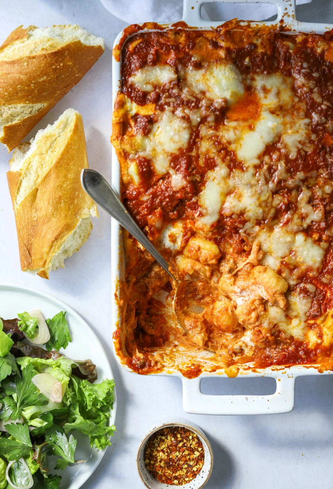

Four Cheese Gnocchi Al Forno

Description
Pillowy soft potato gnocchi layered with hearty bolognese
sauce and a creamy mixture of ricotta, mascarpone, parmesan,
and mozzarella cheeses. This melty, bubbling baked gnocchi is
quintessential comfort food thats equally delicious the next day!
Ingredients
- Gnocchi
- Cream Cheese
- Chili Flakes
- Ground Beef
- Garlic
- Tomato Paste
- Ricotta
- Mozzarella
- Onion
Steps
- Make the sauce, this sauce is like a quick bolognese with
onion, garlic, ground beef and tomatoes. Alternatively, you
could use ground chicken, turkey or Italian sausage instead of beef.
- Make the ricotta, the center of this baked gnocchi is a layer of
creamy ricotta cheese, mascarpone (or cream cheese), grated parmesan
and mozzarella. Whisk all four cheeses together and season with
salt and pepper.
- Layer and bake, layer the gnocchi, bolognese and ricotta mixture
into a 9X13 baking dish. Bake, uncovered, until piping hot a bubbling!